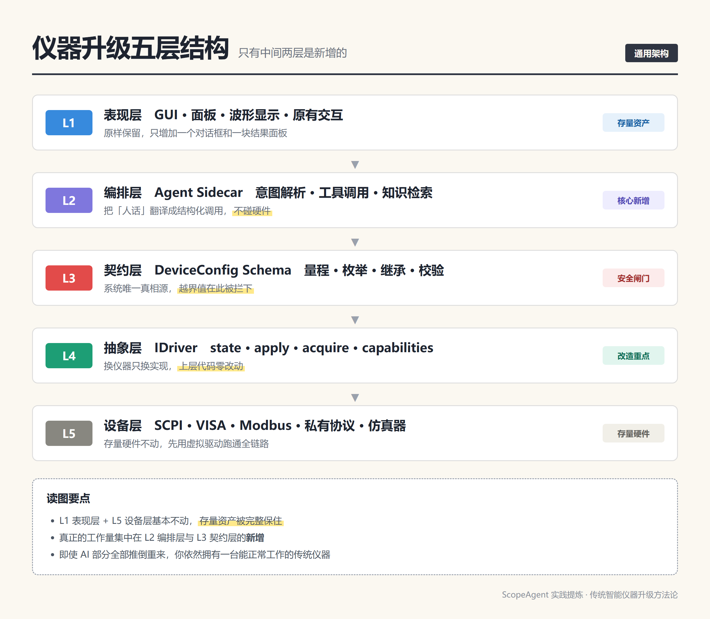
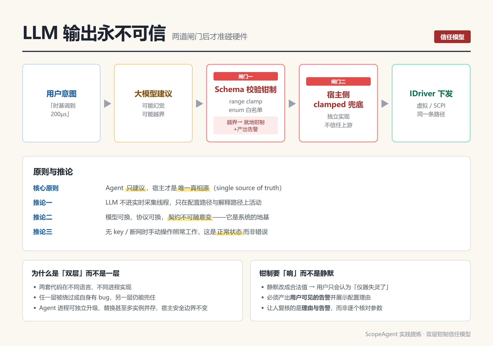
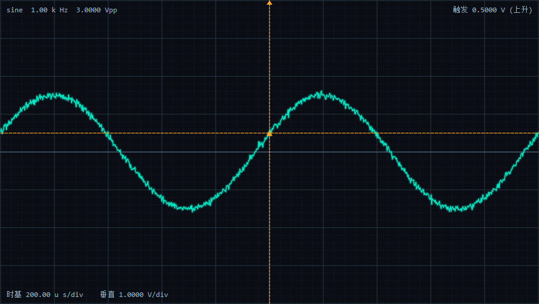

打开一台十年前设计的频谱仪或示波器，你会看到这样一幕：面板上几十个旋钮和按键，屏幕上一层层菜单，操作手册八百页。用户想看一个 3Vpp、1kHz 的信号波形，得先理解时基、垂直档位、触发耦合、采样率这四个概念，还要理解它们之间的联动约束。
这不是设计缺陷，是交互成本的必然代价——在 GUI 图形界面成熟之前，操作复杂度是不得不付的税。
大模型带来了一个重新定价的机会：让用户用自然语言表达意图，由系统自动完成参数推理。但很多团队一上手就把大模型接进了驱动层，效果立竿见崖地差：
| 常见做法 | 后果 |
|---|---|
LLM 输出直接调 driver->apply() | 一次幻觉就能损坏被测对象或仪器 |
| 在原有 C++ 主进程里直接嵌入 Python/LLM 运行时 | 采集时序被污染，实时性彻底失守 |
| 每一类仪器重新设计一套 Prompt 与字段 | 无法规模化，模型一换全线重做 |
| 把 Agent 当成「自动执行的脚本」 | 出错时用户不知道发生了什么，也无法人工接管 |
| 依赖外网 API 与云端密钥 | 内网、涉密、现场环境直接不可用 |
问题不在模型能力，而在架构位置：模型被放在了离硬件太近的地方。
我们在一个真实的 Qt + C++ 示波器项目（ScopeAgent）里验证了一套解法。这套方法论不限于示波器，对频谱仪、矢量网络分析仪、源表、功率计、任意信号发生器乃至工业测试台架都成立。
把大模型放在「建议层」，把下发权留在「设备抽象层」，中间用一份显式的契约隔开。
具体到结构，就是五层：
L1 表现层 GUI / 面板 / 原有交互 —— 存量保留，局部增补
L2 编排层 Agent Sidecar（意图/工具/知识） —— 全新增
L3 契约层 Schema（量程/枚举/继承/校验） —— 全新增
L4 抽象层 IDriver 驱动接口 —— 重点改造
L5 设备层 SCPI/VISA/Modbus/私有协议 —— 存量不动其中最关键的判断是：L1 和 L5 基本不动，L4 小改，工作量的绝大部分集中在 L2 与 L3 的新增。这意味着「AI 化」的工程风险是可控的——即使 AI 部分全部推倒重来，你依然拥有一台能正常工作的传统仪器。

把 Agent 能力引入 C++ 宿主，业界常见三种做法：
| 方案 | 做法 | 优点 | 致命问题 |
|---|---|---|---|
| 进程内嵌 | 主程序链接 Python/LLM 运行时，直接调函数 | 延迟最低、无 IPC | 崩溃传染、依赖污染、实时线程被 GC/推理抖动影响，Qt 与 Python 生命周期难协同 |
| DLL/so 动态库 | C++ 写推理逻辑，模型侧只提供推理库 | 性能好、部署一体 | 绑定模型运行时，升级模型就要重编主程序；ABI 脆弱；仍无法隔离崩溃 |
| 独立进程 Sidecar（推荐） | Agent 跑在独立进程，通过本地 HTTP/JSON 通信 | 崩溃隔离、语言自由、可独立升级、可打包 | 多一次 IPC（本地环回，毫秒级，可接受） |
我们选了第三种。ScopeAgent 的做法是：C++ 侧用 QProcess 拉起 Python sidecar，轮询 /health 直到就绪，再 POST /v1/configure。
关键细节值得单独强调：
// app/src/agentclient.cpp
// 优先使用打包好的独立 exe（无需 Python），否则回退 python server.py
QString sidecarExe = agentDir + "/scopeagent-sidecar.exe";
if (QFileInfo::exists(sidecarExe)) {
program = sidecarExe;
args << "--port" << QString::number(m_port);
} else {
program = findPython(); // 找不到则明确降级
if (program.isEmpty()) {
emit statusChanged("未找到 Python（且无 sidecar 可执行文件）", false);
return;
}
args << "-u" << "server.py" << "--port" << QString::number(m_port);
}三个设计决策值得复用：
QProcess 启动、退出即信号通知、析构时 kill 并等待，避免僵尸进程。另外一个小而重要的细节：Windows 下隐藏子进程控制台窗口。
m_process->setCreateProcessArgumentsModifier([](QProcess::CreateProcessArguments* a) {
a->flags |= CREATE_NO_WINDOW; // 对 python 与打包 exe 均生效
});Sidecar 与宿主之间，我们选了 127.0.0.1:8765 上的 HTTP/JSON，而不是 gRPC、WebSocket 或命名管道。理由很务实：
curl 都能复现问题，降低调试成本。http.server 即可实现，无需 protobuf 代码生成与版本对齐。QNetworkAccessManager 天然支持，UI 永不阻塞。唯一需要注意的兼容性坑：Qt 5.12 没有 QNetworkReply::setTransferTimeout，健康检查必须自己加单次定时器中止：
// Qt 5.12 无 setTransferTimeout，用单次定时器兜底中止
QTimer* abortTimer = new QTimer(reply);
abortTimer->setSingleShot(true);
connect(abortTimer, &QTimer::timeout, reply, &QNetworkReply::abort);
abortTimer->start(1000);这是整套架构里最重要、也最容易被低估的一层。
我们定义了一份 DeviceConfig 契约，它同时定义了：字段名、类型、量程、枚举白名单、默认值。
# agent/schema.py
CONFIG_FIELDS = {
"waveform": {"type": "enum", "values": ["sine","square","triangle","sawtooth","noise"], "default": "sine"},
"frequency_hz": {"type": "number", "min": 1.0, "max": 10_000_000.0, "default": 1000.0},
"amplitude_vpp": {"type": "number", "min": 0.01, "max": 100.0, "default": 3.0},
"dc_offset_v": {"type": "number", "min": -100.0, "max": 100.0, "default": 0.0},
"sec_per_div": {"type": "number", "min": 0.000_000_5, "max": 1.0, "default": 0.0005},
"volts_per_div": {"type": "number", "min": 0.005, "max": 20.0, "default": 1.0},
"trigger_level_v": {"type": "number", "min": -100.0, "max": 100.0, "default": 0.0},
"trigger_slope": {"type": "enum", "values": ["rising","falling"], "default": "rising"},
"noise_level": {"type": "number", "min": 0.0, "max": 1.0, "default": 0.02},
}这份定义在 C++ 侧有对应镜像：
// app/src/deviceconfig.h
struct DeviceConfig {
QString waveform = "sine";
double frequencyHz = 1000.0; double amplitudeVpp = 3.0;
double secPerDiv = 0.0005; double voltsPerDiv = 1.0;
double triggerLevelV = 0.0; QString triggerSlope = "rising";
double noiseLevel = 0.02;
static DeviceConfig fromJson(const QJsonObject& o, const DeviceConfig& base);
static DeviceConfig clamped(const DeviceConfig& c); // 兜底钳制
};必须提醒的一个坑：这份契约在两个地方各有一份实现（Python 侧 + C++ 侧），增删改字段时必须同步改两处，且注意线格式用
snake_case（frequency_hz）而 C++ 成员是camelCase（frequencyHz）。这是双语言架构的固有代价——要么加契约生成脚本，要么在 CI 里加一致性校验。
这里有个很划算的设计：LLM 看到的工具参数定义，直接从 CONFIG_FIELDS 生成，而不是手写。
# agent/tools.py
def build_tools():
props = {}
for name, spec in CONFIG_FIELDS.items():
if spec["type"] == "enum":
props[name] = {"type": "string", "enum": spec["values"]}
else:
props[name] = {"type": "number", "minimum": spec["min"], "maximum": spec["max"]}
...好处有三：
minimum/maximum/enum 直接写进 function calling 的 JSON Schema，模型在生成阶段就被引导向合法值——这比事后校验便宜得多。用户很少一次性说清全部参数。validate_config(cfg, base) 的设计是：未提及的字段从当前状态继承，而非重置为默认值。
def validate_config(cfg, base=None):
for name in FIELD_ORDER:
spec = CONFIG_FIELDS[name]
if name in cfg and cfg[name] is not None:
...# 校验并钳制
else:
out[name] = base.get(name, spec["default"]) # 继承当前值这一点直接决定体验好坏。「时基调到 200µs」不应该把用户之前设好的垂直档位、触发电平全部抹掉重置。
大模型的输出必须假设为不可信输入。理由不新鲜：幻觉、越界、格式错误、单位混淆、枚举幻觉。我们把防护做成两道独立的闸门。

闸门一：Python 侧 schema 校验（在 Agent 进程内）
def _clamp_number(value, lo, hi, default):
try:
v = float(value)
except (TypeError, ValueError):
return default # 解析失败 → 回退，绝不把异常抛给硬件路径
if v < lo: return lo
if v > hi: return hi
return v同时做软约束一致性检查——这类检查不改参数，只产生告警：
# 一致性规则：时基应能展示至少 1~2 个周期（软约束，仅告警）
period = 1.0 / out["frequency_hz"]
if out["sec_per_div"] > period * 10:
warnings.append("时基 %ss/div 相对频率 %sHz 偏慢，可能看不到完整周期，建议减小")闸门二：Qt 侧 clamped() 兜底（在宿主进程内，独立实现）
这是纵深防御，不是冗余重复：
一个容易被忽视的设计细节：钳制必须产出用户可见的 warnings，并把配置理由（rationale）一起展示。
warnings.append("%s=%s 超出范围 [%s,%s]，已钳制为 %s" %
(name, before, spec["min"], spec["max"], out[name]))如果静默地把超范围值改成合法值，用户会认为「仪器失灵了」。让人复核的是理由与告警，而不是逐个核对参数——这是把智能引入专业仪器的正确姿态。
if not SETTINGS.get("api_key"):
self._send_json(503, {"ok": False, "error": "未配置 API KEY，..."})
return缺 key / 断网时返回 503，宿主 UI 降级为纯手动操作。这不是降级容错，这是产品定义的一部分——工业现场、内网环境、涉密项目里，AI 功能本就不该是唯一入口。
// app/src/deviceconfig.h
class IDriver {
public:
virtual ~IDriver() = default;
virtual QString id() const = 0; virtual QString name() const = 0;
virtual DeviceConfig state() const = 0; // 读当前配置
virtual bool apply(const DeviceConfig& c) = 0; // 下发配置（含钳制）
virtual QVector<double> acquire(int points, double triggerPos = 0.0) const = 0;
virtual QStringList capabilities() const = 0; // 能力描述（供 Agent 查询）
virtual bool connected() const = 0;
};这个接口的六个方法是有意为之的精简：
state() / apply() 构成配置闭环；acquire() 把数据获取抽象出来，Agent 不需要知道波形怎么来；capabilities() 把能力描述暴露给 Agent，让它能先「预研」再动手；connected() 让宿主能明确显示在线状态。我们实现了两个驱动：
| 驱动 | 作用 | 关键实现 |
|---|---|---|
VirtualScopeDriver | 软件合成波形，先跑通全链路 | 正弦/方波/三角/锯齿/噪声 + 触发相位对齐 |
ScpiDriver | 真实仪器接入骨架 | 运行时动态加载 visa64.dll，无链接期依赖 |
ScpiDriver 有个值得抄的细节：运行时动态加载 VISA 库，而不是链接期引入。这让同一套二进制能在「研发机（有 VISA）」和「现场机（无 VISA）」上都能运行——没有 VISA 环境的机器也能启动，只是连不上仪器。
而Agent 侧对这一切完全无感知——它只与 DeviceConfig 契约交互。这是分层的红利。
这是实施顺序上的强建议：
S1 虚拟驱动 + Schema 契约 → 零硬件风险，逻辑错误快速暴露
S2 接入 LLM，跑通意图→配置 → 体验可演示
S3 补全 SCPI 驱动的收发 → 才第一次面对真实设备虚拟驱动能在无硬件、无实验室环境的条件下，把 AI 编排、契约校验、UI 交互全部验证完。S3 只需把 acquire() 里的 :WAVeform:DATA? 补上。
顺带一个必须警惕的坑：虚拟驱动和 MCP 端如果各写了一份波形合成逻辑，就会出现 GUI 显示与 MCP 返回不一致的双份真相。项目里就出现过——
VirtualScopeDriver::acquire()（C++）和mcp_server.py::synth_samples()（Python）各实现了同一套波形与触发相位对齐。改一处必须改另一处。虚拟驱动要么只有一份实现，要么用一致性测试锁死两者输出。
| 工具 | 作用 | 模型调用它的时机 |
|---|---|---|
get_spec | 查询能力规格 | 给出建议前应先调用，做预研 |
get_state | 读取当前配置 | 需要基于现状推理时 |
configure_scope | 生成/下发最终配置 + rationale | 参数推理完成时 |
search_knowledge | 检索本地知识库 | 问题涉及手册/应用笔记时 |
工具描述里写明调用时机，比在系统提示词里写一大段流程规则有效得多：
"description": "查询示波器能力规格（带宽、采样率、可选波形、各档位范围等）。"
"在给出配置建议前应先调用本工具了解设备能力。"configure_scope 强制要求 rationale：
"rationale": {
"type": "string",
"description": "配置理由，用简洁中文说明为什么这样设置"
"（例如根据信号频率计算时基使屏幕显示1~2个周期）",
},
"required": ["rationale"],这是提升信任的关键设计：让模型输出「理由」而不只是「结果」。人看到「1kHz 周期 1ms，设 200µs/div 可显示约 2 个周期」就理解了自动化决策；只看到一个数字则无从判断。
参数推理是模型的能力，但有两类知识模型天生不知道：仪器手册细节和现场经验。所以我们加了本地 RAG：
导入 .md / .pdf → 切块(size=500, overlap=50) → 向量化 → 余弦检索嵌入后端做了渐进降级：
# agent/embedder.py —— 按可用性自动选择后端
get_embedder() # 优先 OnnxEmbedder（本地 ONNX，如 bge-small，512维）
# 缺 onnxruntime/tokenizers 或模型文件时，回退纯标准库 HashEmbedder值得强调的是：即使没有 ONNX 模型、没有 onnxruntime，RAG 依然可用，只是退化为字符二元组哈希的词法近似检索。现场环境里「完整可运行」比「效果最优」更重要。
同时注意：RAG 只是补充上下文，search_knowledge 返回的文本不参与配置下发，双层钳制信任模型完全不变。
架构上还做了一件事：把 sidecar 同时做成一个 MCP（Model Context Protocol）server。
stdio: python agent\mcp_server.py 或 scopeagent-sidecar.exe --mcp
HTTP: POST http://127.0.0.1:8765/mcp| MCP 工具 | 说明 |
|---|---|
get_spec | 查询仪器能力规格 |
get_state | 读取当前配置 |
configure_scope | 生成/下发配置（双层钳制） |
acquire | 采集波形样本 |
客户端接入只需一个配置文件：
{
"mcpServers": {
"scopeagent": {
"command": "C:\\path\\to\\scopeagent-sidecar.exe",
"args": ["--mcp"]
}
}
}这一步的意义超出了技术本身：同一套工具描述，既能服务内置对话框，也能接入任意 MCP 客户端（Claude Desktop、Cursor、其他 Agent 框架）。仪器的智能能力从「一个产品的功能」变成「可被任意编排的能力」，这对做仪器平台的公司是重要的架构决策。
AI 仪器的界面不该是「一个输入框 + 一个结果」。ScopeAgent 的布局把三件事分开：
┌────────────────────────────────────────────────┐
│ 顶栏：状态 / 模型 / 驱动切换 │
├──────────────────────────┬─────────────────────┤
│ WaveformWidget │ 控制面板（读数/手动/知识库）│
│ 波形显示 │ │
├──────────────────────────┴─────────────────────┤
│ 对话窗口（自然语言 + 历史） │ 输出结果（配置表 +│
│ │ 理由 + 工具调用） │
└────────────────────────────────────────────────┘三个要点：
QNetworkAccessManager 异步，UI 显示「推理中」状态。波形绘制用 QPainter 自绘（网格 / 辉光轨迹 / 触发线 / 刻度），不引入第三方 UI 依赖：

如果要动手，按这个顺序：
| 阶段 | 任务 | 验收标准 |
|---|---|---|
| S0 | 定 Schema 契约 | 字段表含类型/量程/枚举/默认值，两侧镜像就位 |
| S1 | 虚拟驱动 + Schema 校验 | 单测覆盖 clamp/继承/枚举白名单，全绿 |
| S2 | Sidecar + 工具化 | curl /health、/v1/configure 返回合法 JSON，越界被钳 |
| S3 | 宿主接入 | 对话框输入 → 配置变更 → 波形变化，UI 不卡 |
| S4 | 双层钳制 | 构造越界/畸形/枚举幻觉输入，两层均能拦住并产出告警 |
| S5 | 真实驱动 | 补全 acquire()，真机收发对齐 |
| S6 | RAG + MCP | 导入手册后可检索；MCP 客户端可驱动 |
| S7 | 打包与灰度 | 目标机免 Python 启动；无 key 时降级为手动模式 |
几个必须提前定好的规则（都是踩出来的）：
它不是万能的。明确不该用 / 需要额外设计的地方：
回头看，ScopeAgent 里最有价值的不是「用大模型控制示波器」这件事本身，而是三个可以搬到任何存量仪器上的设计决策：
传统仪器升级成智能仪器，本质不是加一个模型，而是在既有软件里插入一层可验证的契约与编排。做对了，AI 是加速器；做错了，它就是一台昂贵的随机数发生器。
本文架构与代码均来自 ScopeAgent 实践（Qt 5.12 + C++ 宿主 / Python Sidecar / DeepSeek function calling / SCPI-VISA 驱动）。